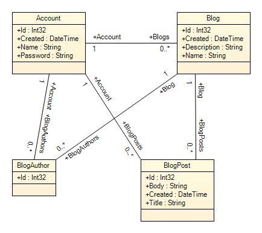

Title: ACL-based authorization model with NHibernate
Author: Daniel Doubrovkine
Email: dblock@dblock.org
Member ID: 913212
Language: C#
Platform: Windows
Technology: C#, NHibernate
Level: Architect
Description: A practical object-level security approach
Section Suggest a section...
SubSection Suggest a subsection...
License: CPOL
This article introduces a practical and secure model for data access with NHibernate. Specifically, we will produce a discretionary access model intercepted by an NHibernate 2.0 event system. We will examine both usage of interceptors and events. While rather straightforward, this is a very powerful model that provides a robust and secure Data Access Layer (DAL) and a per-class/instance approach with a minimal amount of code.
In a typical web or SOA architecture a caller is first authenticated and a security context is created based on the user's credentials. This context is made available through the duration of the request or session. Many web services will then verify whether this user is allowed to perform a specific action behind the web service API.
For example, in a blogging system we would implement a method called SaveBlogPost
and check whether the calling user is an authorized author and throw an exception
when otherwise. A different call, GetBlogPost would check for read
permissions and GetAllBlogPosts would have to iterate through the resulting
list and check access. This is, in my opinion, a very cumbersome implementation.
In contrast to a web service a file system works with ACLs. An Access Control List (ACL) is a list of permissions attached to an object. In an ACL-based security model, when a subject requests to perform an operation on an object, the operating system first checks the list for an applicable entry in order to decide whether to proceed with the operation. Whether a file is accessed locally, via the network, a web service or COM, the ACL system is responsible for the file's security.
How can we implement a similar ACL-based file system model in a web site or service?
We will be implementing an ACL-based model with NHibernate 2.0. I have picked the following simple database object model for a blogging system.
Account that represents an authenticated user. In our system
anyone can sign up, ie. create an account.Blog has an account owner and a variable list of authors. In our
system any authenticated user can create a blog.BlogAuthor that represents an individual contributor or Account.
In our system the blog owner can add or remove contributors. Contributors can opt
out of being contributors without further verification.BlogPost can be seen by everyone. The blog owner can edit all
posts and blog authors can edit their own posts only.
We want to design a programming model where we can represent the above authorization requirements in C# code in a direct, short and concise manner. We would like to write "everyone can create this object" or "a blog author can delete his own posts" in one line of C#. When we succeed, the one line of C# code can be easily extended to a configuration-based implementation where permissions are described in XML files.
Getting the data in and out of the database is a trivial problem solved by many
frameworks. I have chosen Puzzle Framework
to design the domain model, export C# classes for NHibernate (both the .cs class
implementations and the .hbm.xml NHibernate mappings) and make the UML diagram above.
I've also added a generic NHibernateCrudTest unit test that ensures
that all CRUD operations (create, retrieve, update and delete) can be made. This
is the DAL, without any access control.
Here's an example of a Blog class. Notice that I have modified the
Account property to disallow any update, otherwise this is Puzzle-generated code.
This is a way of disallowing ownership change for a blog by design.
public class Blog: IDataObject
{
private System.Int32 _Id;
private Account _Account;
private System.Collections.Generic.IList
_BlogAuthors;
private System.Collections.Generic.IList _BlogPosts;
private System.DateTime _Created;
private System.String _Description;
private System.String _Name;
public virtual System.Int32 Id { get { return _Id; } }
public virtual Account Account
{
get { return _Account; }
set
{
if (_Account != null)
{
throw new InvalidOperationException();
}
_Account = value;
}
}
public virtual System.Collections.Generic.IList BlogAuthors
{
get { return _BlogAuthors; }
set { _BlogAuthors = value; }
}
public virtual System.Collections.Generic.IList BlogPosts
{
get { return _BlogPosts; }
set { _BlogPosts = value; }
}
public virtual System.DateTime Created
{
get { return _Created; }
set { _Created = value; }
}
public virtual System.String Description
{
get { return _Description; }
set { _Description = value; }
}
public virtual System.String Name
{
get { return _Name; }
set { _Name = value; }
}
}
The following NHibernate mapping is auto-generated for a Blog class.
<?xml version="1.0" encoding="utf-8" ?>
<hibernate-mapping xmlns="urn:nhibernate-mapping-2.2" schema="dbo">
<class name="Vestris.Data.NHibernate.Blog, Data.NHibernate" table="Blog">
<id name="Id" type="Int32" column="Blog_Id" access="field.pascalcase-underscore">
<generator class="identity" />
</id>
<many-to-one name="Account" column="Account_Id" class="Vestris.Data.NHibernate.Account, Data.NHibernate" />
<bag name="BlogAuthors" inverse="true">
<key column="Blog_Id" />
<one-to-many class="Vestris.Data.NHibernate.BlogAuthor, Data.NHibernate" />
</bag>
<bag name="BlogPosts" inverse="true">
<key column="Blog_Id" />
<one-to-many class="Vestris.Data.NHibernate.BlogPost, Data.NHibernate" />
</bag>
<property name="Created" column="Created" type="DateTime" />
<property name="Description" column="Description" type="String" />
<property name="Name" column="Name" type="String" />
</class>
</hibernate-mapping>
Since our goal is to do authorization at the lowest level possible and at object
level we must intercept access to all objects above or below the DAL. An obvious
choice is to wrap every class in the DAL with a class that implements authentication,
but NHibernate offers a much more compelling model by using a class that implements
IInterceptor. The IInterceptor interface defines a virtual
hook into the CRUD functions. An empty implementation, NHibernate.EmptyInterceptor,
is also available and can be derived from in order to implement some, rather than
all methods. For example, we can now witness the lifetime of all objects on the
console.
public class ServiceDataInterceptor : EmptyInterceptor
{
// save an existing instance (flush dirty data)
public override bool OnFlushDirty(object entity, object id, object[] currentState,
object[] previousState, string[] propertyNames, NHibernate.Type.IType[] types)
{
Console.WriteLine("FlushDirty: {0}:{1}", entity, id);
return base.OnFlushDirty(entity, id, currentState, previousState, propertyNames, types);
}
// save a new instance
public override bool OnSave(object entity, object id, object[] state, string[] propertyNames,
NHibernate.Type.IType[] types)
{
Console.WriteLine("Save: {0}:{1}", entity, id);
return base.OnSave(entity, id, state, propertyNames, types);
}
// load an existing instance
public override bool OnLoad(object entity, object id, object[] state, string[] propertyNames,
NHibernate.Type.IType[] types)
{
Console.WriteLine("Load: {0}:{1}", entity, id);
return base.OnLoad(entity, id, state, propertyNames, types);
}
// delete an existing instance
public override void OnDelete(object entity, object id, object[] state, string[] propertyNames,
NHibernate.Type.IType[] types)
{
Console.WriteLine("Delete: {0}:{1}", entity, id);
base.OnDelete(entity, id, state, propertyNames, types);
}
}
An interceptor is hooked-up to a session factory when the latter is manufactured.
public ISessionFactory GetSessionFactory()
{
Configuration cfg = new Configuration();
cfg.Properties.Add("dialect", "NHibernate.Dialect.MsSql2000Dialect");
cfg.Properties.Add("connection.provider", "NHibernate.Connection.DriverConnectionProvider");
cfg.Properties.Add("connection.driver_class", "NHibernate.Driver.SqlClientDriver");
cfg.Properties.Add("connection.connection_string", "...");
cfg.Interceptor = new ServiceDataInterceptor();
cfg.AddAssembly("...");
return cfg.BuildSessionFactory();
}}
Another way of hooking up to the NHibernate pipeline is with event listeners. This
is a more detailed framework than an interceptor since almost every ISession
method has a corresponding event. It is possible to configure a session factory
with a number of listeners at runtime. This is a new feature in NHibernate 2.0.
private T[] Insert<T>(T[] listeners, T instance)
{
if (instance == null)
return listeners;
List<T> newListeners = new List<T>();
newListeners.Add(instance);
newListeners.AddRange(listeners);
return newListeners.ToArray();
}
...
cfg.EventListeners.PostLoadEventListeners = Insert(cfg.EventListeners.PostLoadEventListeners,
new MyPostLoadEventListener());
It's also the only way to access an object after it has been loaded as opposed to an interceptor that seeks to capture properties before an instance is modified in any way. As you will see below with ACLs, this limitation of interceptors makes it useless for our purposes, we will hence use the event system.
Before we implement any actual authorization we must answer two basic questions.
In our implementation a user needs to be created first, adding a row to the
Account table. I chose to implement an IdentityService that
can log-in a user by looking up this record. This service could be easily replaced
with another authentication scheme that, for example, logs in a user to Active Directory,
then locates a record in the Account table based on the SID. For demonstration
purposes both the security context and the identity service are rudimentary, in
the "real world" this should be a robust interface-based and pluggable provider
implementation.
public class UserContext : EmptySessionContext
{
private int _accountId = 0;
private DateTime _timestamp = DateTime.UtcNow;
public int AccountId { get { return _accountId; } }
public DateTime TimeStamp { get { return _timestamp; } }
public UserContext(Account account)
{
_accountId = account.Id;
}
}
public class IdentityService
{
private ISession _session = null;
public IdentityService(ISession session)
{
_session = session;
}
public UserContext Login(string username, string password)
{
Account account = _session.CreateCriteria(typeof(Account))
.Add(Expression.Eq("Name", username))
.Add(Expression.Eq("Password", password))
.UniqueResult<Account>();
if (account == null)
{
throw new AccessDeniedException();
}
return new UserContext(account);
}
}
The manufactured security context must now be made available through the lifetime of a request. The web services model typically exposes a singleton SessionManager. We will need a similar foundation for non-web-based unit tests, possibly thread-safe.
public abstract class SessionManager
{
[ThreadStatic]
private static ISession _currentSession = null;
[ThreadStatic]
private static ISessionContext _currentSessionContext = null;
public static ISession CurrentSession
{
get { return _currentSession; }
set { _currentSession = value; }
}
public static ISessionContext CurrentSessionContext
{
get { return _currentSessionContext; }
set { _currentSessionContext = value; }
}
}
The actual code attached to the article's source makes some more complex production grade improvements. First, a session source is provided that can be HTTP, thread- or user-context based depending on the execution context. This enables a seamless integration in various threading or pipeline requirements based on this idea. Unit tests use the user-context-based session source and an impersonator that allows the current thread to switch to a different user context, then revert back to self.
In the web-based scenario the ASP.NET pipeline will initialize the session manager
with the HTTP pipeline context and a set of event handlers. Subsequently, it will
manufacture the logged-in user context and any future code, including the event
handlers performing the data authorization tasks, can obtain SessionManager.CurrentSessionContext
to work with. The following code initializes SessionManager under ASP.NET and sets
the default user context.
SessionManager.Initialize(new HttpSessionSource(), ServiceDataEventListeners.Instance);
SessionManager.CurrentSessionContext = new GuestUserContext();
An Access Control List (ACL) is a list of permissions attached to an object. Each
entry defines a DataOperationPermission (a type of data access allowed
or denied) for a type of DataOperation. An ACL can then render a verdict
on whether the calling user may or may not access the object to which the ACL is
attached to.
public enum DataOperation
{
None = 0,
Create = 1,
Retreive = 2,
Update = 4,
Delete = 8,
All = Create | Retreive | Update | Delete,
AllExceptCreate = Retreive | Update | Delete,
AllExceptUpdate = Create | Retreive | Delete,
AllExceptDelete = Create | Retreive | Update
}
public enum DataOperationPermission
{
Deny,
Allow,
}
public enum ACLVerdict
{
None,
Denied,
Allowed
}
public interface IACLEntry
{
ACLVerdict Apply(UserContext ctx, DataOperation op);
}
Does it seem that this should be a boolean Allowed or Denied
verdict? Consider an ACL entry that says that an Account has read access
to a Blog. This says nothing about whether another account has access
to the same blog, producing a None verdict. In a system that denies
access by default (an ACL must allow access explicitly), a None verdict
over all entries in an ACL means that access is denied.
With a base ACLBaseEntry, we can specialize a number of ACL entries,
including ACLEveryoneAllowRetrieve, ACLEveryoneAllowCreate,
as well as a generic ACLAccount that assignes a specific permission
to a specific account. Here's an example of ACLEveryoneAllowRetrieve.
public class ACLEveryoneAllowRetrieve : ACLBaseEntry
{
public ACLEveryoneAllowRetrieve()
: base(DataOperation.Retreive, DataOperationPermission.Allow)
{
}
public override ACLVerdict Apply(UserContext ctx, DataOperation op)
{
return (op == DataOperation.Retreive) ? ACLVerdict.Allowed : ACLVerdict.None;
}
}
In general, an ACL is a collection of ACLEntry items and
implements such methods as Check. The latter will throw an AccessDeniedException
when the current security context ctx doesn't allow the caller to perform
an action op.
public ACLVerdict Apply(UserContext ctx, DataOperation op)
{
ACLVerdict current = ACLVerdict.Denied;
foreach (IACLEntry entry in _accessControlList)
{
ACLVerdict result = entry.Apply(ctx, op);
switch (result)
{
case ACLVerdict.Denied:
return ACLVerdict.Denied;
case ACLVerdict.Allowed:
current = ACLVerdict.Allowed;
break;
}
}
return current;
}
public bool TryCheck(UserContext ctx, DataOperation op)
{
ACLVerdict result = Apply(ctx, op);
switch (result)
{
case ACLVerdict.Denied:
case ACLVerdict.None:
return false;
}
return true;
}
public void Check(UserContext ctx, DataOperation op)
{
if (!TryCheck(ctx, op))
{
throw new AccessDeniedException();
}
}
An ACL applies to an instance of an object. For example, given a Blog
we need a BlogACL that inherits from ACL. I chose a simple
construct of manufacturing an instance of an ACL from an instance of an NHibernate
data class via reflection, by name. Alternatively an ACL could be attached to the
DAL class itself, but I prefer some level of aspect programming.
public abstract class ServiceDataAuthorizationConnector
{
public static void Check(IDataObject instance, DataOperation op)
{
string aclClassTypeName = string.Format("Vestris.Service.Data.{0}ClassACL", instance.GetType().Name);
Type aclClassType = Assembly.GetExecutingAssembly().GetType(aclClassTypeName, true, false);
object[] args = { instance };
ACL acl = (ACL) Activator.CreateInstance(aclClassType, args);
acl.Check(CurrentUserContext, op);
}
}
The following method is implemented in the post-load event listener and will check
access when loading any instance of IDataObject by manufacturing a
BlogClassACL for an instance of a Blog. By using reflection
I have separated authorization classes from NHibernate data, but it might be a good
idea to implement ACL members in the auto-generated DAL and add ACL methods to the
IDataObject interface.
public class ServiceDataPostLoadEventListener : IPostLoadEventListener
{
public void OnPostLoad(PostLoadEvent @event)
{
Debug.WriteLine(string.Format("OnPostLoad - {0}", @event.Entity));
if (@event.Entity is IDataObject)
{
ServiceDataAuthorizationConnector.Check((IDataObject) @event.Entity,
DataOperation.Retreive);
}
}
}
The implementation of BlogClassACL is meant to be trivial since we
will have to develop a ClassACL for each data type.
public class BlogClassACL : ACL
{
public BlogClassACL(Blog instance)
{
// allow every authenticated user to create a blog
this.Add(new ACLAuthenticatedAllowCreate());
// allow everyone to get information about this blog
this.Add(new ACLEveryoneAllowRetrieve());
// the owner has full privileges
this.Add(new ACLAccount(instance.Account, DataOperation.All));
}
}
The above code is what we're trying to achieve! It shows immediate advantages
and the power of this approach: the implementor has access to the actual object
and can derive an ACL from it. It is very readable and describes naturally who has
access to an instance of a Blog in exchange of a small performance
penalty. In addition, it is possible to "inherit" ACLs as in the following example
of a BlogPostClassACL.
public class BlogPostClassACL : ACL
{
public BlogPostClassACL(BlogPost instance)
{
// posts have the same permissions as the blog
this.Add(new BlogClassACL(instance.Blog));
// allow the author of the post to do everything with the post
this.Add(new ACLAccount(instance.Account, DataOperation.AllExceptCreate));
// allow blog authors to create posts
if (instance.Blog.BlogAuthors != null)
{
foreach (BlogAuthor author in instance.Blog.BlogAuthors)
{
this.Add(new ACLAccount(author.Account, DataOperation.Create));
}
}
}
}
You must be careful with inehritance. The above code is actually wrong. The blog's ACL allows any authenticated user to create a blog. Inheriting the ACL means that any user can create a post, which is incorrect - only blog owner or blog authors can create posts.
ASP.NET offers a simple and powerful membership provider model for authentication
that we will use by the book. Our IdentityServiceMembershipProvider
serves instances of IdentityServiceMembershipUser objects. Here're
the interesting parts.
public class IdentityServiceMembershipUser : MembershipUser
{
public IdentityServiceMembershipUser(Account account) { }
public override DateTime CreationDate { get { ...; } }
public override string UserName { get { ...; } }
}
public class IdentityServiceMembershipProvider : MembershipProvider
{
private SessionFactory _sessionFactory = new SessionFactory(null);
public override bool ValidateUser(string username, string password)
{
IdentityService identityService = new IdentityService(_sessionFactory.Instance.OpenSession());
return identityService.TryLogin(username, password);
}
public override MembershipUser CreateUser(string username, string password, string email,
string passwordQuestion, string passwordAnswer, bool isApproved, object providerUserKey,
out MembershipCreateStatus status)
{
IdentityService identityService = new IdentityService(_sessionFactory.Instance.OpenSession());
MembershipUser user = new IdentityServiceMembershipUser(identityService.CreateUser(username, password));
status = MembershipCreateStatus.Success;
return user;
}
public override MembershipUser GetUser(string username, bool userIsOnline)
{
IdentityService identityService = new IdentityService(_sessionFactory.Instance.OpenSession());
return new IdentityServiceMembershipUser(identityService.FindUser(username));
}
}
The membership provider is configured in Web.config. We will use Forms authentication, deny access to all pages by default and define a custom membership provider above that exposes our database users. This enables login and implements authentication.
<system.web>
<authorization>
<deny users="?" />
</authorization>
<authentication mode="Forms" />
<membership defaultProvider="IdentityServiceMembershipProvider">
<providers>
<add name="IdentityServiceMembershipProvider" type="IdentityServiceMembershipProvider" />
</providers>
</membership>
...
</system.web>
The ASP.NET pipeline serves us single requests in Global.asax post authentication.
We can initialize the SessionManager accordingly for each request with
the user context returned by the authentication system. This ties everything together.
public void Application_Start(Object sender, EventArgs e)
{
SessionManager.Initialize(new HttpSessionSource(), ServiceDataEventListeners.Instance);
}
public void Application_PostAuthenticateRequest(Object sender, EventArgs e)
{
IdentityServiceMembershipUser user = (IdentityServiceMembershipUser) Membership.GetUser();
if (user == null || user.Account == null)
{
SessionManager.CurrentSessionContext = new GuestUserContext();
}
else
{
SessionManager.CurrentSessionContext = new UserContext(user.Account);
}
}
The project contains a rudimentary blogging system. The simplest way to run it is from Visual Studio 2008. You will first need to create a database called OLS and populate it with the ols.sql script from the package. Try registering a user, logging in and creating blogs and posts. Create another user and try to post to the blog of the first user (you can see other people's blogs on the front page). You will get an access denied exception.
After implementing the ACL-based authorization framework the developer doesn't need to worry about checking access anywhere in the business logic. A security architect can now independently design access on a per-class basis, translating business reqiurements directly into access control. From the security point of view this is much less error-prone and completely solves any accidental retrieval of unauthorized data.
The latest version of this article and source code can always be found in Subversion under svn://svn.vestris.com/codeproject/ObjectLevelSecurity. You can also browse the source code. You can find the latest information about this project at code.dblock.org.
This library, along with any associated source code and files, is published under the CPOL license, please reuse.